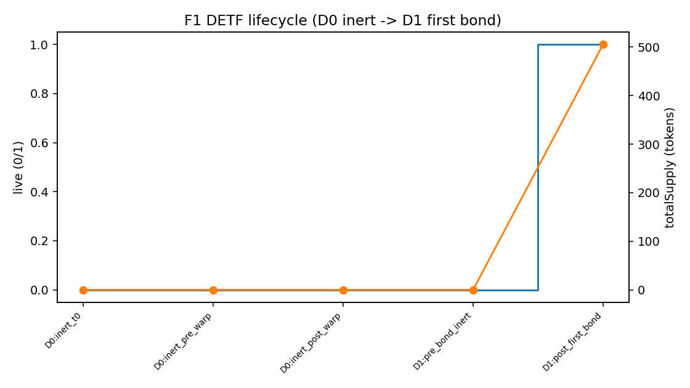

1. Why this exists
Olympus showed that people would bond into shared depth for a protocol money unit. It also showed the limits of one global token and vibes-only policy. A DETF keeps the good parts — real reserve, bonding, mint/burn rules — and turns them into a product you can create many times, one basket at a time.
Short version: not a fork of a moment. A product class.
This is not a registered securities ETF. “Decentralized ETF” means basket-like onchain reserve + share — not an SEC fund, and not legal ownership of offchain stocks or bonds.
2. What a DETF is (one screen)
- One onchain share — the unit you hold, transfer, and trade when markets exist.
- A real reserve — the market book (pair, triangle, or weighted) that backs and prices the unit.
- A bond path — first bond opens a closed unit and builds shared depth; more bonds can deepen it.
- Mint and burn — primary market into or out of the DETF against that reserve, under rules fixed at deploy.
Pricing is not a private spreadsheet. The reserve is the engine.
3. Bond · mint · burn
| State | What you can do |
|---|---|
| Closed | Primary mint and burn blocked — unit not live yet |
| Live (after first successful bond) | Mint and burn follow Policy or Open; more bonds can deepen depth |
After open, the loop is simple:
- Bond — add capital / deepen shared reserve under onchain terms.
- Mint or burn — move between external assets (or vault shares) and DETF when rules allow.
- Hold, claim, or trade — free share, bond rewards while locked where wired, or secondary market when available.
Waiting for the calendar does not open a closed unit. The first bond does.

4. Policy vs Open
Mode is chosen at deploy. It is explicit — not “zero numbers mean open.”
| Policy (default) | Open | |
|---|---|---|
| Mint when live | Only when the unit is rich vs its reserve | Anytime (product routes still apply) |
| Burn when live | Only when the unit is cheap vs its reserve | Anytime |
| Quiet middle | Primary mint/burn sit out; secondary / reserve still exist | No price quiet band for primary mint/burn |
| Common defaults | About +5% rich / −5% cheap vs an abstract 1.0 | Numbers may be stored; price limits are not applied |
| Extra supply over time | Possible when rich — to bond holders only | Never |
| Peg / return promise? | No | No |
Open is not freer yield. It only removes price limits on primary mint and burn. Fees can still apply. It does not run natural expansion.

5. Launch types (this release)
Same DETF law. Different reserve shape. We’re launching with three designs on Uniswap V4 — each paired with a matching market rail.
| Type | Reserve shape | Choose when |
|---|---|---|
| Pair DETF | Share ↔ one pair (constant-product buffer) | One cash leg, simple story, real ConstProd depth |
| Triangle DETF | Three assets, one orbital / sphere book | DETF + two underlyings that should share inventory |
| Weighted basket DETF | Multi-asset weighted book, fixed weights at deploy | Intentional weights — not pretend-equal units |
Bond principal is the fungible LP on that Uniswap V4 market. Market details: Uniswap V4 markets.
6. Where value can come from (honest)
- Reserve composition — what sits in the book, and at what weights.
- Bonding — participation in shared depth under published terms.
- Fees — when the product applies them (sizes are not guarantees).
- Secondary markets — trading the share when liquidity exists.
Do not expect: automatic yield, rebase “return,” locked APY, or “always above peg.” Bond rewards while locked (when wired) are not free-airdrop expansion to unlocked holders. Open never expands supply that way.

7. Risks and non-claims
- Not a registered securities ETF — no legal ownership of offchain underlyings.
- Not OlympusDAO / not OHM — product lineage, not affiliation or treasury claim.
- No peg, APY, or coupon guarantee — Policy bands and expansion are mechanisms.
- Open removes price limits only — not fees, not returns, not expansion.
- Market risk remains — inventory, volatility, and adverse selection still apply.
- Immutable units — misconfigured launches are abandoned, not silently rescued.
- Eligibility — some underlyings may be restricted by issuer or venue; users own compliance.
Disclaimers
- Not a registered ETF. “Decentralized ETF” describes a product pattern — not an offer of a securities fund share.
- No ownership of offchain underlyings. Holding a DETF does not convey legal title to stocks, bonds, or other offchain instruments.
- No performance promises. Not investment, legal, or tax advice. Smart contracts and markets involve loss of funds.
- Status. Launch families ship as they are ready. Live addresses and audits will be linked when published.